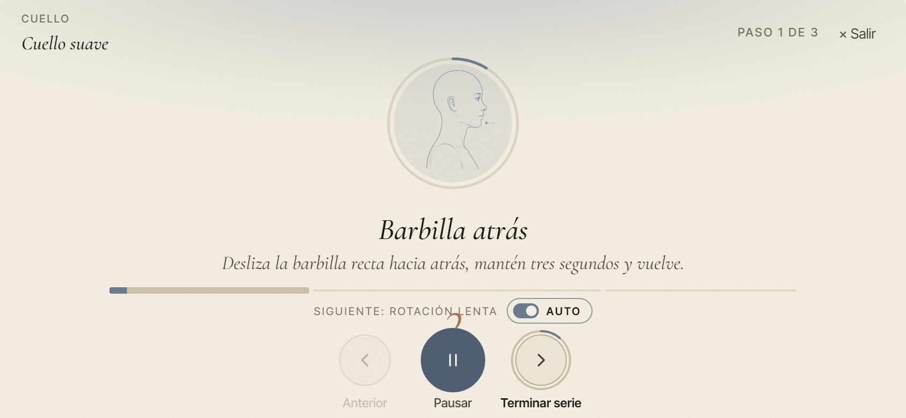
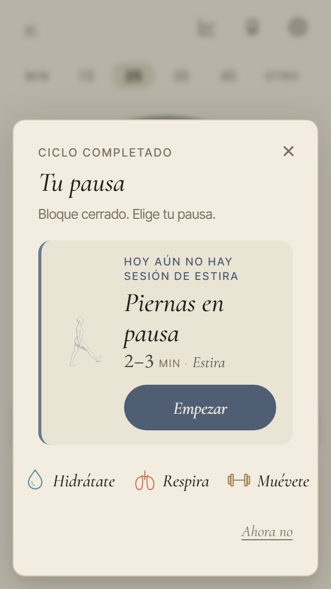
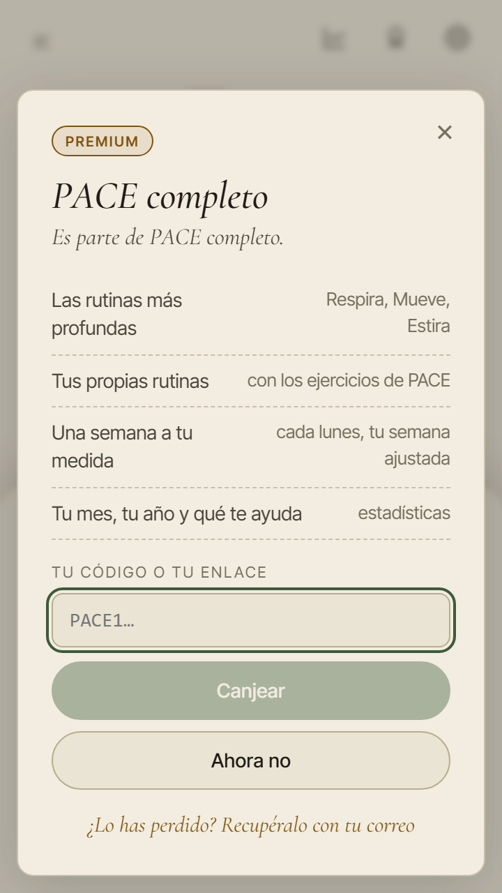
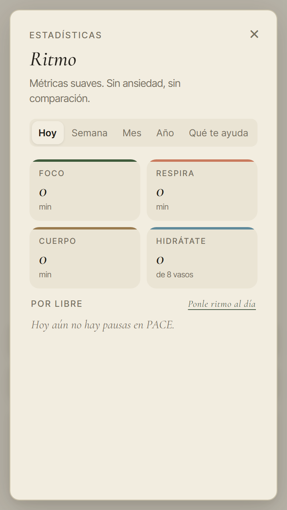
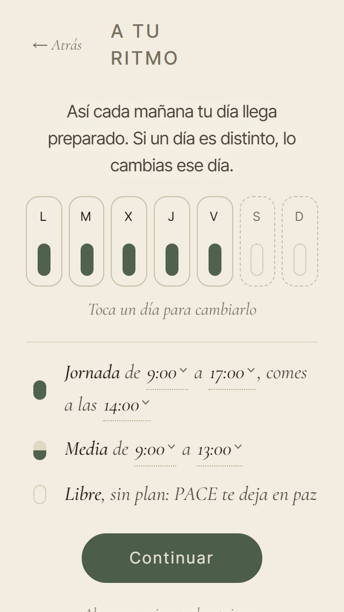

Caza en el móvil
He recorrido PACE como en un teléfono (con toque y pantalla de móvil) en seis tamaños, de 320 × 568 a 412 × 915, en castellano y en inglés, en crema y en oscuro, y con la letra al 115 % como la pone Android. Unas 250 pantallas medidas: lo que se sale, se corta, se pisa, pide scroll o se toca mal.
9 hallazgos: 6 montados en la rama claude/caza-movil-22nov-a63749, sin juntar: los 3 que no cambiaban
nada a la vista y, con tus letras, la 1A, la 3A y la 6A. La 4 queda pospuesta hasta que la mires en tu Android.
Los otros 2 son leves y van al final.
De lo más grave a lo más leve
Montada la A1 · Con el móvil girado, la rutina esconde su cuenta
Las apps de Android y del iPhone dejan girar la pantalla (la web instalada no: su manifiesto dice «vertical»). Si giras el móvil en una rutina de Mueve o Estira, el número de repeticiones y los segundos quedan detrás de los botones de abajo, y «Siguiente: …» se monta encima. Medido en 640 × 360, 740 × 360 y 844 × 390: el número no se ve; en 915 × 412 se ve el número pero no lo que dice debajo. En vertical, todo bien.

Arreglado2 · En el iPhone, tocar un campo ampliaba la pantalla
Safari, y el WebView del iPhone, amplían la página al tocar un campo con la letra de menos de 16 px y no la devuelven al salir. «Otro» en los minutos va a 13 px y el código de PACE completo a 14: al tocarlos, la home se quedaba ampliada y cortada hasta pellizcar. (Las páginas sueltas de la web, como /recuperar, ya iban a 16 px.) Ahora, solo en el iPhone y el iPad, la página no amplía al tocar un campo; se sigue pudiendo ampliar con dos dedos. En Android no cambia nada. No se ve distinto: solo deja de ampliarse sola.
Montada la A3 · La pausa dice «Ciclo completado» tras un solo bloque
Al terminar el primer bloque de Foco, la ventana de la pausa lleva arriba «Ciclo completado» («Cycle complete»), mientras el aro dice «Ciclo 1 / 4» y el texto de la ventana, «Has terminado un bloque de Foco». A quien empieza le dice dos cosas que no casan.

Pospuesta4 · El aviso del Foco en la web del móvil promete más de lo que puede
En Ajustes, «Aviso al terminar» dice «Foco · si la pestaña está detrás». En un ordenador es verdad. En el navegador de un móvil, con la pantalla bloqueada, Chrome y Safari congelan la página y no hay quien dé el aviso a su hora: llega al volver. En las apps sí avisa el sistema. Esto no se puede ver fuera de un móvil; está en la lista de abajo para que lo mires tú antes de cambiar el texto. Pospuesta (Ez, 22 nov.): el texto no se toca hasta que lo pruebes en tu Android (paso 2 de abajo).
Arreglado5 · Android: Atrás en «Tus datos» cerraba Ajustes entero
En Ajustes › «Copias, borrar y PACE completo», el botón o el gesto Atrás de Android cerraba el panel en vez de volver a Ajustes, que es lo que se espera de Atrás. Ahora sube un paso, como la «‹», y el siguiente Atrás cierra. El Escape del teclado sigue igual. Lo demás (cajón, estadísticas, logros, bibliotecas, las rutinas a medias, la hoja del día, Hidrátate) ya se cerraba bien con Atrás: lo he probado capa a capa.
Montada la A6 · «PACE completo. Es parte de PACE completo.»
Desde Ajustes, «PACE completo › Introducir código» abre la hoja con el título «PACE completo» y, debajo, «Es parte de PACE completo.». Esa línea está pensada para cuando se toca algo cerrado (una rutina, «Tus rutinas»); con el título genérico se repite.

Arreglado7 · Dos toques demasiado pequeños para el dedo
«Ponle ritmo al día», en Estadísticas › Hoy, se tocaba en 15 px de alto; y Foco, Pausa y Larga, que salen arriba en los móviles altos (390 × 844 y más), en 26. Ahora responden en 36 y 39 px, con la zona invisible de siempre: se ven igual.

Quedan justos, sin tocar porque no tienen hueco al lado o ya se midieron: los vasos de Hidrátate a 320 px (24 × 31), «Cambiar» y «Hoy voy por libre» en la tarjeta del día (25 px de alto), las píldoras de Ajustes (33-38) y «Ahora no» del cierre de una rutina (26). Si quieres, se miran juntos con una maqueta.
8 · Leve: con la letra al 115 %, «A tu ritmo» se parte en dos en la bienvenida a 320 px
En la pantalla de la semana, el título pequeño queda junto a «← Atrás» y se parte: «A TU / RITMO». Solo a 320 px de ancho con la letra grande; se lee bien.

9 · Leve: Ajustes pide 72 px de scroll a 360 × 640 con la letra al 115 %
A 100 % cabe sin scroll (lo vigila tests/ajustes-movil.spec.js). Con la letra grande baja como una lista normal. No lo tocaría antes de v1.
Revisado y bien
- La home en sus momentos (tarjeta corta, «¿Cuánto trabajas hoy?», el día servido, la noche) en los seis tamaños, en los dos idiomas, en crema y en oscuro y con la letra al 115 %: nada se sale de la pantalla ni hay scroll de lado. A 320 × 568 pide scroll, como ya aceptaste.
- El cajón, Estadísticas, Logros, Ajustes, Hidrátate, la biblioteca de Respira y la ventana de la pausa, a 320, 360 y 412 de ancho, en los dos idiomas y con la letra grande.
- Una rutina de Estira entera: los dos lados con «Cambia de lado», Auto, el «+15 s», el cierre con «¿Te ayudó?».
- La bienvenida y la visita guiada a 320 × 568 con la letra al 115 %, sin errores en la consola.
- Atrás de Android en diez capas: todas se cierran con un Atrás y ninguna manda PACE al fondo por error.
No he podido recorrer a fondo, por tiempo, la voz del runner, el calendario de Android y la compra apagada, el sobre y el
Foco con la pantalla bloqueada en una pestaña simulada. Los cuatro tienen sus pruebas en la suite
(voz-runner-sincro, android-calendario, compra-apps, sobre-hoja,
foco-hora-de-acabar), que siguen en verde.
Solo se sabe en un móvil de verdad
Cosas que Playwright no puede imitar. Con cinco minutos por móvil basta.
En tu Android
- Que no gire. Con la 1A juntada, gira el móvil en una rutina: la app se queda en vertical.
- El aviso en la web con la pantalla bloqueada. En Chrome, en pacegrass.app (no en la app), con «Aviso al terminar» encendido, pon un Foco de 15 minutos y bloquea la pantalla. ¿Suena o vibra a los 15 minutos, o solo al desbloquear? (Decide la 4.)
- El teclado sobre el código. Ajustes › «Copias, borrar y PACE completo» › «PACE completo»: con el teclado abierto, ¿se ve «Canjear»?
- El gesto Atrás a mitad de rutina. Desliza desde el borde en mitad de un ejercicio: sale de la rutina (queda para seguir con «Continúa»). Mira si te pasa sin querer mientras haces el ejercicio.
- La letra grande del sistema. Ajustes de Android › Pantalla › Tamaño de fuente al máximo: la home y Ajustes.
En tu iPhone
- «Otro» en los minutos, en Safari. En pacegrass.app, toca «Otro»: con la 0.214.0 la pantalla se amplía; con esta rama juntada, no.
- Lo mismo en la app de TestFlight. Con la 0.214.0, ¿se amplía al tocar «Otro»? (La app ya no deja ampliar con los dedos, y no sé si eso frena también este zoom.)
- Que no gire, como en Android: con la 1A juntada, la app del iPhone se queda en vertical.
- Dos toques rápidos en «+ Un vaso más». ¿Suma dos vasos, o amplía la pantalla?
Lo que hay en la rama
| Commit | Qué |
|---|---|
20a9d447 | En el iPhone, tocar un campo ya no amplía la pantalla (app/ui/pantalla.js, fila nueva en DECISIONES_TECNICAS_VIGENTES). |
4b40e14b | «Ponle ritmo al día» y Foco/Pausa/Larga se tocan con el dedo (app/ui/toques.css.jsx). |
c0a118d4 | Android: Atrás en «Tus datos» vuelve a Ajustes (app/tweaks/TweaksPanel.jsx). |
8bef77f8 | 1A: las apps de Android y del iPhone, solo en vertical; verify lo vigila en los dos. |
09297d48 | 3A: la ventana de la pausa dice «Bloque terminado» / «Block done» (tests/pausa-rotulo.spec.js). |
e634f355 | 6A: la hoja de PACE completo, sin la línea repetida cuando nada cerrado la abrió (tests/premium-codigo.spec.js). |
Sin bump ni novedad en el sobre: lo hace la coordinadora al juntar (la 1, la 2, la 3 y la 5 merecen una línea en el sobre). Los
scripts del recorrido, en banco/ (land.js mide el runner girado).